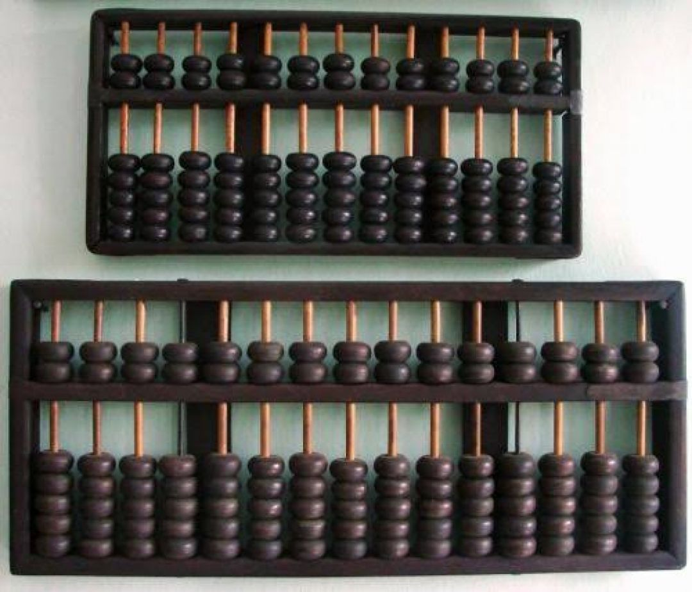
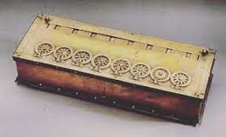
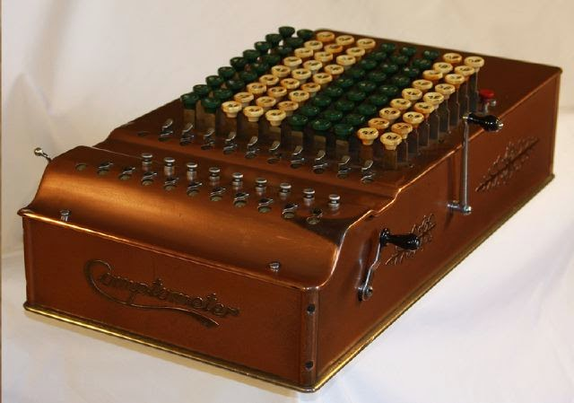
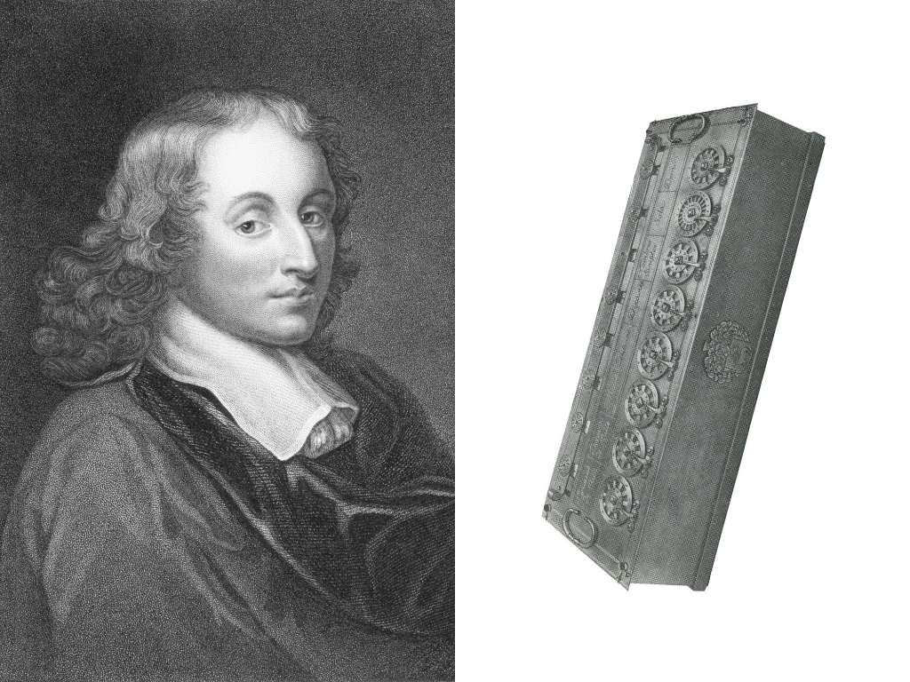

SEJARAH, PERKEMBANGAN DAN KRITIK TENTANG TEKNOLOGI MAJU
1. Sejarah Awal Komputer
Awal mula evolusi komputer kemungkinan besar dimulai dengan keinginan manusia untuk memahami dan memanipulasi lingkungan. Manusia paling awal mengenali fenomena kuantitas dan menggunakan jari mereka untuk menghitung dan bertindak atas benda-benda material di dunia mereka. Metode sederhana seperti ini akhirnya memberi jalan pada pembuatan perangkat proxy seperti sempoa, yang memungkinkan tindakan pada jumlah item yang lebih tinggi, dan tablet lilin, dimana simbol yang ditekan memungkinkan penyimpanan informasi.
a. Sempoa

lempengan atau papan gambar”. Sempoa yang lebih dikenal sebagai alat bantu dalam perhitungan Pada zaman seperti saat ini mungkin sempoa sudah jarang yang menggunakan bahkan biasasaja tidak ada lagi yang mau menggunakan alat sederhana itu, dikarenakan zaman moderen saat ini sudah ada digenggaman. Awal mula sebuah komputer terlahir dari benda sederhana ini, yaitu sempoa atau juga disebut abaskus. Jadi sempoa merupakan cikal bakal komputer
b. Kalkulator Roda Numerik 1

Abacus mulai menghilang dan jarang digunakan lagi sejak kemunculan alat tulis seperti kertas dan pensil. Hal ini sangat terasa di benua Eropa. Penemuan mesin komputer lainnya muncul pada sekitar 12 abad kemudian.Kalkulator roda numerik yang dinamakan pascaline (numerical wheel calculator) ditemukan oleh seorang anak muda yang berumur 18 tahun yaitu Blaise Pascal (1623-1662), berkisar pada tahun 1642.
c. Kalkulator Roda Numerik 2
 Seorang matematikawan serta filsuf dari Jerman yaitu Gottfred Wilhem von Leibniz (1646-1716) memperbaharui pascaline dengan penemuannya sekitar pada tahun 1694. Leibniz membuat mesin yang bisa digunakan untuk mengalikan., Leibniz menyelesaikan alat tersebut denganbermodalkan catatan serta gambar-gambar dari pascal sebelumnya.Kemudian, tahun 1820 Charles Xavier Thomas de Colmar membuat kalkulator mekanik fungsi aritmatik dasar yang memiliki empat fungsi yaitu perkalian, pembagiam, penjumlahan, pengurangan. Dimana saat itu digunakan dalam perang dunia ke-1 karena dapat membantu dalam melakukan kalkulasi.
2. Sejarah Perkembangan Komputer
a. Blaise Pasca
Perkembangan komputer sejak masa Blaise.Pascal.(1623-1662) dimana Pascal mengembangkan kinerja komputer dari pendahulunya, dengan penemuannya yang membawa 8 jumlah bilangan. Berikut prinsip kalkulator yang dibuat Pascal: pada roda gigi pertama yang bergerigi 10, saat roda gerigi melakukan.satu.putaran (10), maka roda bergerigi yang kedua akan bergerak dan satu gigi akan bergeser dangerigi pada roda akan berotasi hingga 10 kali.(100) yang akan menggerakan roda gigi yang.lainnya hingga mencapai 1000.
Gottfried W.Leibniz menemukan kalkulator yang dapat bersaing dengan Pascaline. Pada 1672, Stepped Reckoner temuan Leibniz ini sama bisa melakukan proses penambahan, pengurangan, perkalian dan pembagian. Lalu Leibniz yang meneruskan menulis namanya kedalam sejarah komputer. Selama kurang lebih 40 tahun Leibniz memperbaharui design kalkulator Pascaline serta memproduksinya.
b. Charles Babbage
 Seorang Profesor Matematika asal Inggris yaitu Charles Babbage atau lebih dikenal sebagai Bapak komputer adalah gelar dari Charles Babbage. Sebuah komputer yang dapat diprogram merupakan gagasan dari Charles Babbage yang menjadikannya sebagai salah satu tokoh penting dalam dunia komputer.
Seorang Profesor Matematika asal Inggris yaitu Charles Babbage atau lebih dikenal sebagai Bapak komputer adalah gelar dari Charles Babbage. Sebuah komputer yang dapat diprogram merupakan gagasan dari Charles Babbage yang menjadikannya sebagai salah satu tokoh penting dalam dunia komputer.
Difference engine yang merupakan buatan Charles Babbage merupakan inspirasi yang melahirkan sejarah awal mula terbuatnya komputer. Pada tahun 1822 Charles Babbage mencoba menggunakan mesin untuk menghitung tabel matematika.
Mesin tersebut dirancang pertama kali sekitar 25.000 bagian dan beratnya sekitar 136.000 kg, lalu tinggi dari komputer ini mencapai 2,4 meter. Sama pentingnya dengan perhitungan yakni dua fungsi tambahan yaitu penyimpanan otomatis dan pengambilan informasi dalam bentuk kode dan eksekusi otomatis dari urutan operasi. Itulah alasan sejarahwan memulai dengan Mesin Analitik yang coba dibangun Charles Babbage pada abad kesembilan belas.
c. Gottfred Wilhem von Leibniz
Komputer mengalami perkembangan yang pesat pada 1820, yaitu dimana kalkulator mekanik sudah bisa melakukan 4 operasi dasar aritmatika.
d. Herman Hollerith
Herman Hollerith menemukan mesin tabulator yang dibuat olehnya menggunakan punched card. Pada prosesnya, dikatakan memiliki kinerja yang sangat cepat dan dapat memproses berjuta-juta data statistik. Hollerith berfikir bagaimana caranya agar dapat membangun pemicu yang berasal dari sebuah koneksi elektrik dengan alat perhitungan yang dapat menyimpan segala bentuk informasi. Cara ini muncul ketika menggunakan angka sebagai kode. Data yang didapati oleh Hollerith dapat diletakkan (lubang) ke-sebuah kartu (punched card) yang memilikilokasi yang sesuai atau lokasi dengan kondisi tertentu. Ide inilah yang menjadi dasar terbuatnya komputer era modern karena kartu ini bisa diurutkan maupun dijumlahkan menggunakan mesin. Selain itu data-datanya juga bisa disimpan.
e. Howard H. Aiken
Dengan memanfaatkan singnal elektromagnetik, Howard dapat menciptakan sebuah kalkulator elektronik. Diikuti oleh munculnya perkembangan komputer selanjutnya yaitu Electronic Numerical Integrator and Computer (ENIAC). John W John Presper Eckert (1919-1995) merupakan 2 ahli yang berhasil membuat ENIAC.
f. John William Mauchly
Komputer-komputer terus dikembangkan oleh para ahli. Pada 1940-an John menemukan mesin yang bisa menyimpan data dan program ke dalam memori bernama Electronic Discrete Variable Automatic Computer (EDVAC) dan ini merupakan awal mula pembuatan CPU yang diperkiran muncul sejak masa tersebut
3. Kritik Terhadap Perkembangan Teknologi Maju
Teknologi merupakan bagian dari kehidupan kita saat ini. Semua aktivitas hampir selalu melibatkan teknologi. Banyak manusia yang menganggap bahwa komputer sekedar barang elektronik biasa, padahal komputer termasuk ke dalam teknologi tepat guna seiring perkembangan zamannya dan memiliki makna yang sangat luas tergantung daripada kebutuhan manusia itu sendiri. Saat ini banyak sekali pendapat-pendapat yang menjadi perdebatan yang muncul terkait dengan dampak positif dan negatif dari perkembangan komputer maupun teknologi. Banyak yang menilai bahwa teknologi merupakan salah satu proyek yang ambisius yang dilakukan oleh si pembuat. Berikut beberapa pendapat para ahli :
a. James D. Finn
Pada tahun 1960 ia mengatakan bahwa teknologi bukan sekedar sebuah mesin, tapi sebagai sistem, manajemen, proses juga sebagai mekanisme yang dapat memantau perkembangan zaman. Dimana James dianggap sebagai Bapak Teknologi di bidang pendidikan.
b. Saettler
Teknologi dalam bahasa Yunani (Techne) artinya adalah keahlian, seni atau kerajinan tangan. Saettler mengatakan bahwabangsa Yunani kuno mengakui teknologi sebagai pengetahuan yang dapat melakukan kegiatan khusus. Saettler mengacu pada Mitcham yang memiliki konsep dari penjelasan aristotuntuk menghasilkan kegiatan yang dapat membantu manusia dengan baik.
c. Lewis Mumford
Teknologi berperan sebagai sistem penindasan dari kontrol total yang mengubah makna menjadi tujuan, hanya mencari keberlangsungannya sendiri, oleh Lewis Mumford disebut sebagai "mesin besar". Inisiatif manusia akan hilang dengan sendirinya dari kehidupan masyarakat. Hal ini dipengaruhi oleh sifat manusia yang cenderung malas berpikir dan hanya mengandalkan kemampuan teknologi.
Ciri-ciri masyarakat modern yang dikemukakan oleh TalcottParson, sebagai berikut:
1. Prestasi, adalah masyarakatnya suka mengejar prestasi.
2. Pengembangan diri, adalah lebih mengutamakan kepentingan diri sendiri.
3. Netralitas efektif, adalah bersikap biasa saja (netral) tidak membanding-bandingan satu dengan yang lainnya, bahkan dapat menuju sikap tidak memperhatikan orang lain atau lingkungan.
4. Universalisme, kondisi dimana kita menerima segala sesuatu dengan obyektif.
5. Spesifitas, kondisi dimana kita berterus terang dalam menerangkan segala sesuatu.
Perkembangan teknologi yang berdampak kecenderungan berpikir, diantaranya :
1. Tumbuhnya perbedaan kecenderungan (reifikasi), dimana manusia dapat menganggap bahwa benda atau teknologi yang mereka miliki menjadi sumber utama bagi mereka dimana ia akan memiliki sesuatu pemikiran yang luas yang harus selalu diwujudkan secara kuantitatif dan secara lahiriah.
2. Posisi yang dimanipulasi, ini disebabkan oleh perkembangan teknologi yang dapat merubah suatu benda menjadi benda yang memiliki tingkat kecerdasan atau artificial intelligent untuk memenuhi keinginan serta kebutuhan manusia.
3. Fragmentasi, adalah spesialisasi dalam pembagian kerja yang pada akhirnya dimana para pekerja diharuskan untuk bertindak profesionalisme dalam dunia kerja.
4. Individualisasi, merupakan suatu kecenderungan yang timbul seperti merenggangnya hubungan antar manusia dalam kehidupan sehari-hari mereka.
金村美玖

かねむら みく
Saitama, September 10 2002
On August 15th, passed the auditions to become a member of Hiragana Keyakizaka46's 2nd Generation.